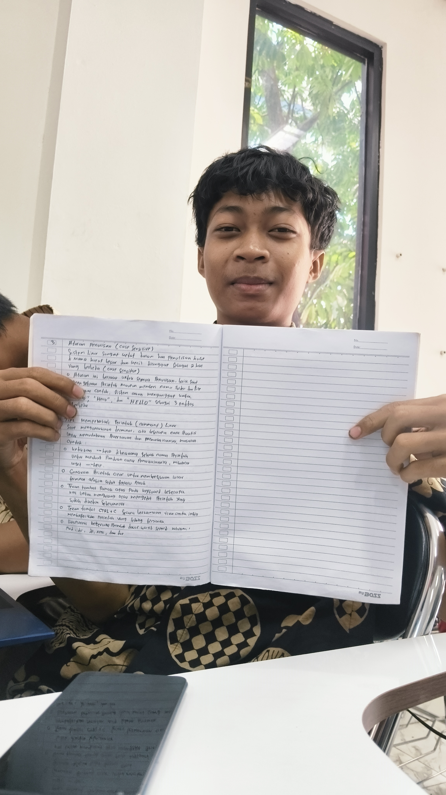
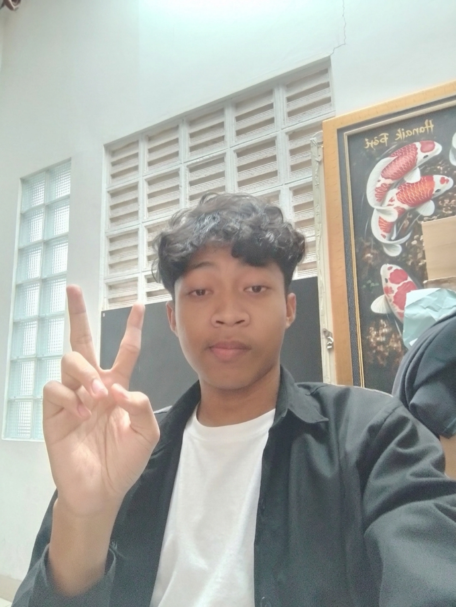
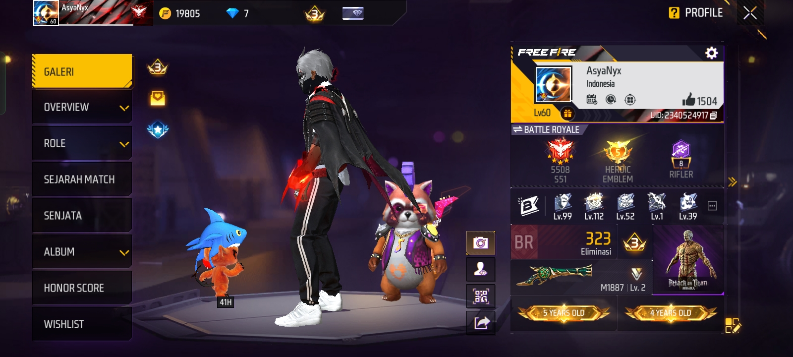
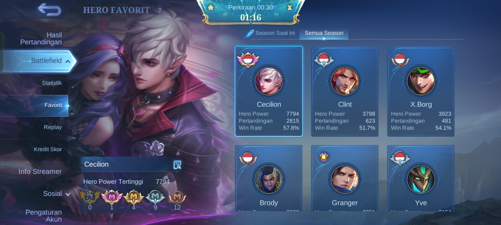

Tentang Saya
Saya Muhamad Rasya Fattah Ar Rizqy, mahasiswa baru Teknik Informatika yang sekarang masih di semester pertama. Di tahap ini saya lagi membangun dasar-dasarnya dulu, mulai dari logika pemrograman sampai membuat halaman web sederhana seperti yang sedang kamu lihat ini.
Tujuan saya adalah menjadi seorang AI Engineer. Untuk sampai ke sana saya sudah menyusun rencana belajar lima tahun, dari 2026 sampai 2030, dan halaman ini adalah salah satu langkah kecil pertamanya. Di luar kuliah, saya suka main Mobile Legend dan Nonton Film, dan saya ingin terus belajar sambil mengerjakan proyek nyata.
Video perkenalan
Koleksi foto



